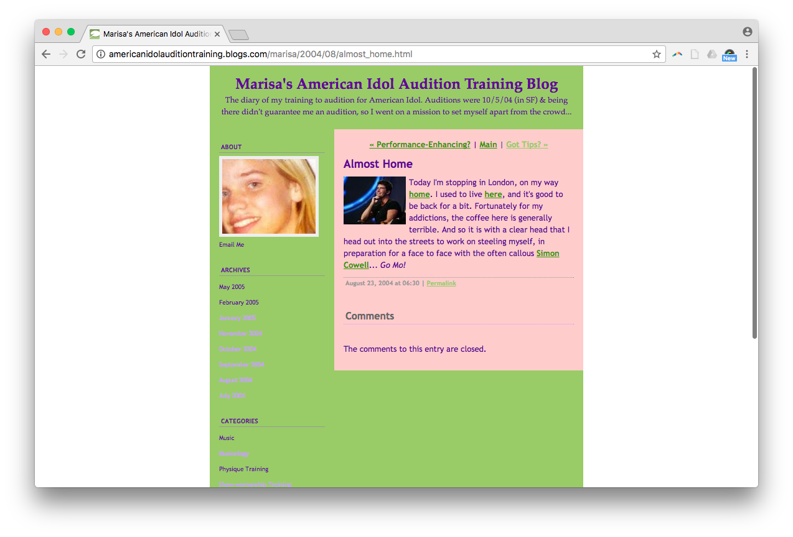
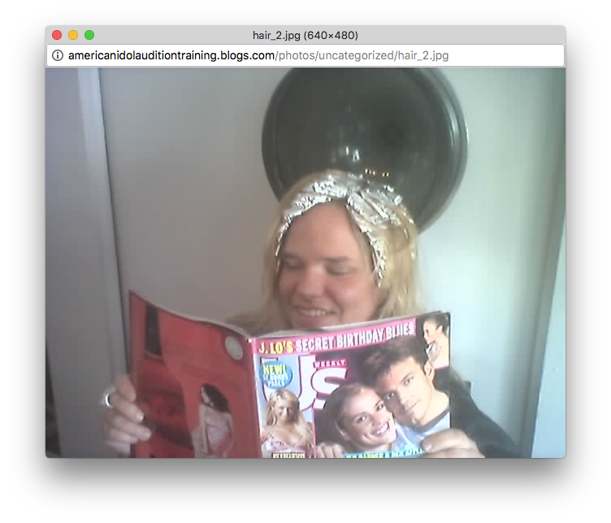
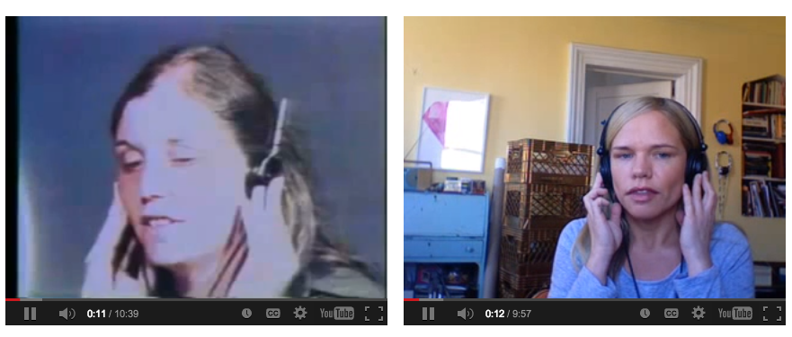
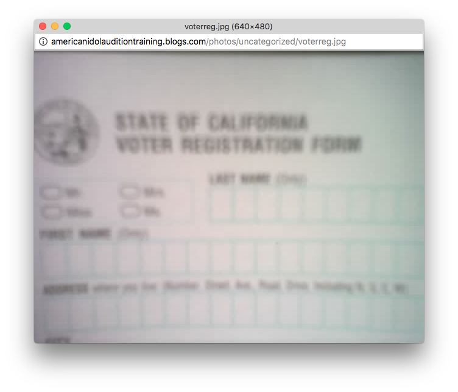

In fall 2004, artist and curator Marisa Olson decided to audition for the television show American Idol
as an art project. She embarked on a year-long journey of preparation and training,
documenting the process on a blog.


As an endurance performance, the work critically investigated the American Idol audition process and its
perpetuation of gender stereotypes and normative beauty standards, as well as the show’s perverse take on
what it meant to be a “good singer.”
At the same time, it was a highly personal digital narrative that
attracted a massive online following. Olson involved followers in her audition process, using pop culture
participation as a way of encouraging political participation in the run-up to the 2004 US Presidential election.


“I KEPT HEARING HOW MY GENERATION (THE MAIN DEMOGRAPHIC FOR THE SHOW) WASN’T SHOWING UP TO POLLS.
THEY WOULD STAND IN LINE FOR 8 HOURS TO AUDITION [FOR AMERICAN IDOL], BUT NOT 15 MINUTES TO VOTE.”
—MARISA OLSON
Let the Training Begin!
July 17, 2004
Ok, so I’ve had an evening to sleep on it. I am SO excited about training for the audition,
but there is a strong possibility that I won’t even get one... The Idol website says that SF
auditioners can get in line as of 6am, on October 4, but being in line on time, even being first in
line, does not guarantee that I will get an audition. (Check out the photo of the long audition line
that I found on the Idol website!) The producers will walk up and down the line and pick people out
based on their appearance, style, and singing ability. I really need to work on all of the above, then.
And my goal, now, is to even GET an audition, let alone make it to the final 10... And I’m really dwelling
on what my audition song will be, though I’m eager to discuss it with a trainer.
Eat to Compete
August 22, 2004
Today is an exciting day, already. This morning I met with a nutritionist (the fabulous Nicole Britvan,
for the locals who are looking), and she gave me tons of good advice. I recently switched from a lacto-ovo diet
to a vegan one, to get in shape for the audition line but I wanted to make sure I wasn't doing anything dumb.
I'm not one of those gals who believes in updating strangers on her weightloss, but let me tell you, the Training Diet
is in full effect and it's working. Yay! And Nicole gave me some great tips, not only on what to eat in general but
what to eat while camping out. Despite my fear of the "competition" getting ahold of these edgeworthy tips,
I'll let you know that she recommends Lara Bars, snackbars that are only fruit & nuts (no preservatives, corn syrup, etc),
and ironically enough they are made by a company called Humm. I think it is a sign.
Performance-Enhancing?
August 24, 2004
I identify a lot with our nation's Olympic Athletes. We've all trained hard with our eyes set on one prize....
As the Olympic hoopla mounts, I've been happy to see so many "anti-doping" ads. But it all has me thinking...
I believe I may have an addiction of my own... caffeine! Back at home, I was drinking double soy lattes for breakfast,
every day, and a big diet cola at lunch. Call it trainee's nerves... I needed my fixes, and I hate to say that I can now
imagine how an athlete (or a songthlete) might turn to chemicals... What's happening to me?! Being in Europe, the last few days,
I've consumed so much coffee. I'm simultaneously bouncing off the walls and experiencing the sedation that comes with overstimulation.
My mind feels like it's underwater. Caffeinated water! I need to go home and detox. Just say no, kids!
Stay Tuned...
January 18, 2005
Whew. I cannot remember the last time that I was this exhausted. I made it through months of training,
hours of standing in line, and several auditions songs... I'm not allowed to tell you much, at this point,
but I can tell you that my ears are ringing to the tune of a Whitney Houston song. If you've not had a chance to do so,
please do visit my moblog page, which includes over forty photos taken over the last few days. And, meanwhile, thanks for
your continued support and words of wisdom. Stay tuned to find out how I did...
No More American Idol Secrets
May 26, 2005
By now the cat’s out of the bag: I got rejected!!!
I made it all the way to the Executive Producers, only to be turned down. After eating, sleeping, and breathing American Idol for so many months, one might ask, “Was it all for nothing?” I think not. In short, this was not so much an
effort to become an Idol contestant as it was a performative exploration of the norms bound up with the show. I also thought of it as quite political—I wanted to get young people thinking about the practice of voting in the lead-up to
the 2004 Presidential elections, which ran parallel to the lead-up to my audition. This, I think, worked. (How fun that my audition aired on the night of the State of the Union!) Over 6,000 of you wrote me to vote on what I should
wear and sing and since then, another 10,000+ of you expressed your solidarity. This, to me, has been profound and I do thank you, sincerely. I’ll admit that this whole process affected me deeply, and as I progressed through the
auditions, I found that I had to put many of my own stereotypes and assumptions in check.
IT'S OVER!!!
The Training Blog was Olson’s first online artwork. Following its success,
she has continued to employ performance, video, net art, and installation to investigate
the various tropes of pop culture and gender, and the aesthetics of failure.
Meanwhile, the work is a touchstone for artists who continue to explore the themes of internet
fame, gender, performance, participation and personal narrative through the web.
Net Art Source /
Marisa's Training Blog